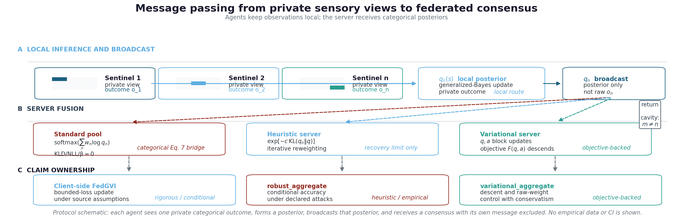

Aggregation and message passing: standard pool, heuristic, and variational server
The server step lives in aggregation.py, where a
categorical specialization of the active-inference belief-sharing
relation (Friston et al. 2024) and the FedGVI objective
(Mildner et al. 2025) meet. Each agent \(n\) broadcasts a categorical local
posterior \(q_n(s)\) over the shared
latent factor, optionally with a scalar base weight \(w_n\). Two fusion rules act directly on
these broadcasts, and a third — the objective-backed
variational_aggregate of Section 5.8.2 —
refines the second into descent on a stated objective. The first is the
log-linear pool, a project-local product-of-experts
consensus. In the terminology of opinion pooling it is the logarithmic
pool, a weighted geometric aggregation rule whose Bayesian-coherence
assumptions have been studied independently of active inference
(Genest and Zidek 1986; Genest et al. 1986; Carvalho et al. 2023); in
machine-learning terms it is the product-of-experts normalization of
local posteriors (Hinton 2002):
\[ \operatorname{log\_linear\_pool}(\{q_n\}) \;=\; \mathrm{softmax}\!\Big(\textstyle\sum_n w_n \log q_n\Big), \] {#eq:log-linear-pool}
For the source bridge, fix one finite shared support \(\mathcal S\) with \(q_n(s)>0\) for every agent and state.
Suppose the inputs to Eq. 7’s softmax message-combination term can be
represented as posterior log potentials \(m_n(s)=\log q_n(s)+\kappa_n\), where \(\kappa_n\) is constant in \(s\), and use declared fixed weights \(w_n\) that do not depend on the emerging
consensus (the unweighted case sets each \(w_n=1\)). Additive constants then cancel
under softmax, giving exactly Eq. (5). This is a
categorical posterior-log-potential specialization of the source
equation’s message-combination term, not a reconstruction of source
message construction, self-exclusion/cavity policy, scheduling,
generative factors, or the complete protocol. The code alias
friston_belief_share names this qualified specialization
only.
The second rule is robust_aggregate, an
iteratively-reweighted pool that discounts each agent by \(\exp(-c\,\mathrm{KL}(q_n \,\|\, q))\)
against the emerging consensus \(q\). A
confidently-wrong (contaminated) agent sits far from the consensus, can
earn a small effective weight and be suppressed in the declared
diagnostic regimes. This independently motivated rule does not transfer
FedGVI’s client theorem to the server side: it is the heuristic
robustness axis of Section 3.3, distinct
from the per-agent rigorous axis of Section 5.7. It is also
only an analogy to robust federated aggregation methods such as
divergence-weighted gamma-mean aggregation, geometric-median robust
aggregation, or Byzantine-tolerant gradient aggregation (Li et al. 2022; Pillutla et al. 2022; Blanchard et al. 2017): those methods motivate the risk
surface, but they do not supply this rule’s guarantee.
The defining identity is bit-level: at zero robustness the reweighted pool is the log-linear pool unchanged.
\[ \operatorname{robust\_aggregate}(0) \;\equiv\; \operatorname{log\_linear\_pool}. \] {#eq:robust-identity}
This is an exact project-local code identity. Under the stated posterior-log-potential assumptions, its right-hand side specializes the message-combination term of Eq. 7; the identity itself neither recovers nor certifies the complete source protocol (Friston et al. 2024).
Protocol map: local updates, broadcast, and server fusion
The visual map in Figure 3 makes the protocol boundary explicit: each client updates and broadcasts a categorical posterior; the server chooses the standard pool, heuristic, or variational route. This is a mechanistic schematic, not an additional benchmark: client-side FedGVI is source- conditional, server-heuristic accuracy is conditional on declared contamination, and the variational route owns objective/descent/raw-weight properties.
Visual protocol map (schematic)

Theorem 1 (Categorical message-combination specialization and local recovery). Let \(\mathcal S\) be a finite shared support, let \(q_n(s)>0\) for every \(n,s\), and suppose Eq. 7’s softmax inputs are represented by \(m_n(s)=\log q_n(s)+\kappa_n\) with \(\kappa_n\) constant in \(s\) and fixed declared weights \(w_n\). Then \(\operatorname{softmax}(\sum_n w_n m_n)\) equals the log-linear pool of (Eq. (5)). This identifies the categorical message-combination term under those assumptions only. Independently, the project’s robust server aggregator at \(c=0\) equals that log-linear pool by (Eq. (6)): every reweighting multiplier is \(\exp(0)=1\), the iteration is skipped, and the same pool code path is returned. Neither statement reproduces the complete source protocol or certifies behavior at \(c>0\).
Corollary 2 (Closed-form Bayes recovery). With the
KL divergence and the NLL loss, the generalized posterior of (Eq. (1)) equals the
closed-form prior-times-likelihood Bayes posterior, \[
q^\ast(s) \;\propto\; \pi_0(s)\,\textstyle\prod_i p(o_i\mid s),
\] so generalized_posterior(KLD, NLL) reproduces
standard Bayes. Pooling those local posteriors in this project gives the
log-linear pool of (Eq. (5)); under the
assumptions of Theorem 5, that
is the categorical message-combination specialization of Eq. 7, not a
recovery of its complete source protocol.
The largest observed discrepancy between
robust_aggregate(robustness=0) and
log_linear_pool is 0 — bit-identical, since the
zero-robustness branch runs the same code path — and between
generalized_posterior(KLD, NLL) and the analytic Bayes
posterior is 5.55e-17, exact to machine precision (about one ULP); both
are reported in Section 7.1, so
Eq. (6) and Eq. 6 are verified
identities rather than approximations.
The honesty contract binds at exactly this point. The recovery
theorem and its corollary cover only the recovery identity and the
per-agent rigorous axis of Section 5.7; no statement
about robust_aggregate transfers a
bounded-influence guarantee to that divergence-reweighting, whose
positive property is the \(\texttt{robustness}=0\) limit of Eq. (6). A scoped
no-go rejects a declared separable objective class without supplying a
broader objective certificate. The per-agent influence weights that the
heuristic produces under contamination are illustrated, not
guaranteed, in Figure 13 and Figure 16; the
genuine per-client FedGVI property is the rcce/AR client loss of Section 5.7. The next
subsection closes this exact gap on the server side with a
different, objective-backed aggregator.
Variational aggregation with objective-backed weight control
The related server construction becomes a genuinely variational rule by replacing the heuristic’s reverse-KL weight update with a forward cross-entropy update. For \(c>0\) and \(\lambda>0\), treat the consensus \(q\) and a vector of effective weights \(a = (a_n)\) as joint variational parameters and define the aggregation free energy
\[ F_\lambda(q, a) \;=\; \sum_n a_n\,\mathrm{CE}(q, q_n)\;-\;\lambda H(q)\;+\;\tfrac{1}{c}\,\mathrm{KL_{gen}}(a \,\|\, w), \] {#eq:agg-free-energy}
where \(\mathrm{CE}(q, q_n) = -\sum_i q_i
\log q_{n,i}\) is the cross-entropy of the consensus relative to
agent \(n\), \(H(q)\) is the consensus entropy, \(c\) is the robustness, and \(\lambda>0\) is the
entropy_weight coefficient (default \(\lambda=1.0\)); \(\mathrm{KL_{gen}}(a \,\|\, w) = \sum_n [a_n
\log(a_n/w_n) - a_n + w_n]\) is the generalized KL between the
effective and base weights. Each block of \(F_\lambda\) has a closed-form minimizer, so
alternating
\[ q \;\leftarrow\; \mathrm{softmax}\!\Big(\tfrac{1}{\lambda}\textstyle\sum_n a_n \log q_n\Big), \qquad a_n \;\leftarrow\; w_n\,\exp\!\big(-c\,\mathrm{CE}(q, q_n)\big) \] {#eq:agg-updates}
is exact block-coordinate descent on Eq. (7)
(variational_aggregate) for \(c>0\) and \(\lambda>0\). The implementation defines
the \(\lambda\downarrow0\) endpoint
separately as a deterministic tied-argmax rule; \(\lambda=0\) is not substituted into the
objective or its \(q\)-update. This
substitution changes both orientation and scale: \(\mathrm{CE}(q,q_n)=\mathrm{KL}(q\|q_n)+H(q)\),
and its common \(H(q)\) term scales all
raw weights, which changes the entropy of the subsequent unnormalized
weighted log pool. The paired \(q\)-
and \(a\)-updates in Eq. (8)
are exact block minimizers of the stated objective; that fact does not
derive the reverse-KL heuristic. Because \(F\) is biconvex, we run the descent
multi-start (pool, uniform, and arithmetic-mean seeds,
lowest observed \(F\) among converged
starts; otherwise the lowest unfinished trace is returned with
converged=False) so a near-one-hot adversary is not left at
the product-of-experts seed in the tested contamination regimes — the
detail that supports the effective-weight diagnostic (Section 11). The
full derivation, the formal statement (block descent, \(c\to0\) recovery, and the raw
effective-weight bound), and the numerical witnesses are in Section 11; the
empirical descent and influence collapse are shown in Figure 14
and Figure 15 and
reported in Section 7.5.2.
The authoritative notation supplement records the complete objective
contract in Eq. (28).
This upgrades the server side from an untracked heuristic to a
derived generalized-Bayes aggregation with an explicit redescending
raw-weight property: a single confidently-wrong agent earns raw weight
\(a_n = w_n\exp(-c\,\mathrm{CE}(q,q_n)) \le
w_n\) that vanishes as it diverges, whereas the naive pool grants
every agent the fixed weight \(w_n\)
however wrong it is. The trade is conservatism — the \(-H(q)\) term makes the stationary point a
maximum-entropy-biased consensus consistent with the weighted
cross-entropies, so variational_aggregate is deliberately
flatter than the product-of-experts and does not maximize peak
point-accuracy. The two server-side rules therefore play complementary,
never-conflated roles, both reported: the sharp
robust_aggregate heuristic for accuracy under contamination
(Section 7.5.1) and the
conservative variational_aggregate for a server-side
objective with stated weight control (Section 7.5.2).
A temperature parameter \(\lambda>0\) (controlled by
entropy_weight, default \(\lambda
= 1.0\)) generalizes the objective to \(F_\lambda\); lower \(\lambda\) sharpens the variational \(q\)-block toward a maximizing state for its
current weighted log pool. The tempered family (Section 11.5; objective
Eq. (24)) recovers
the full-entropy variational aggregator at \(\lambda = 1.0\) and has a separately
implemented deterministic tied-argmax endpoint as \(\lambda\downarrow0\); neither endpoint is
guaranteed accurate and neither is an algebraic recovery of
robust_aggregate. The effective-weight \(a\)-update is unchanged for every \(\lambda>0\), so the raw-weight bound
holds over the objective-defined family.